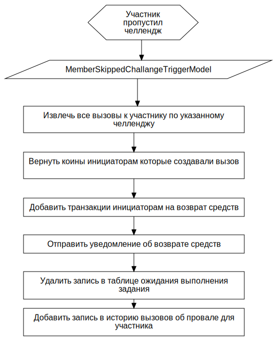

Потеря коинов за выполнение вызова F
FCFlowchart
TAction
::
Use Cases
::
Diagrams
::
PUC: Челленджи
::
Потеря коинов за выполнение вызова
::
Потеря коинов за выполнение вызова F
Description
none
Diagrams

Потеря коинов за выполнение вызова FD
Properties
Name
Value
name
Потеря коинов за выполнение вызова F
Owned Elements
Потеря коинов за выполнение вызова FD
Извлечь все вызовы к участнику по указанному челленджу
Вернуть коины инициаторам которые создавали вызов
Добавить транзакции инициаторам на возврат средств
Отправить уведомление об возврате средств
Удалить запись в таблице ожидания выполнения задания
Добавить запись в историю вызовов об провале для участника